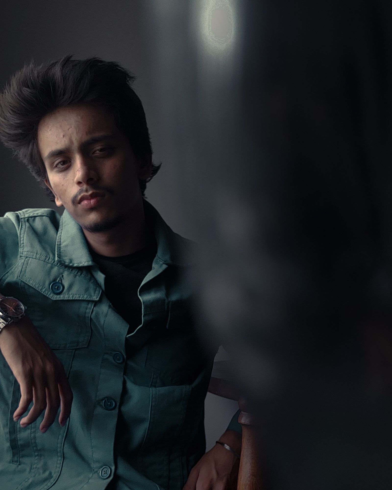
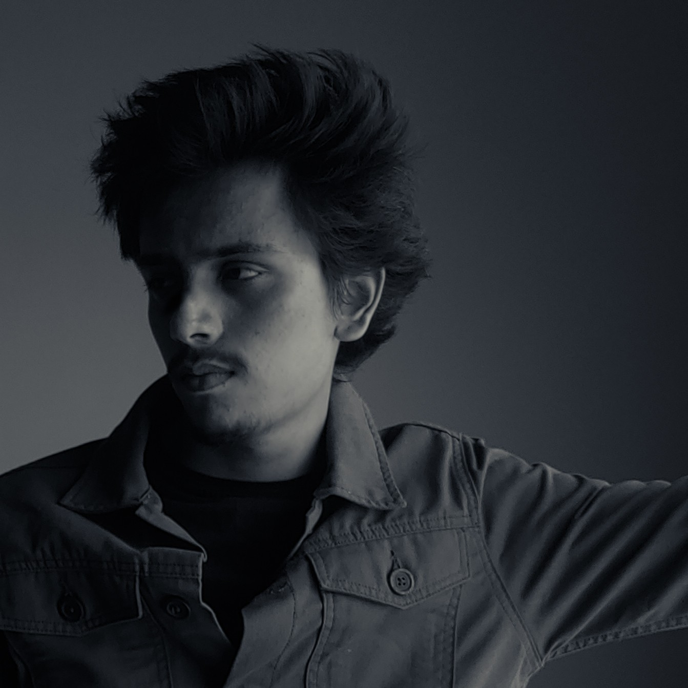

Imagination, meets artificial intelligence.
I create visually compelling digital experiences by combining artificial intelligence, photography and creative experimentation.

Selected work
AI generated Frames
Selected Visuals
Behind the Lens
Photography & Cinematography
Wildlife, seascape, botanical macro, portraits and short-film posters. My own work. Camera / Lightroom / Video editing.
Modeling
A hobby I explore: photo shoots and aesthetic concepts. Expressing confidence, creativity and style through the camera. A creative outlet that runs parallel to the code.
View on Instagram →Graphic Designing
Canva, Figma, Adobe: digital artwork, branding concepts, social media content. I experiment with colour, layout and typography to craft visuals with intent.
View on Instagram →From prompt to perfection.
- 01
Concept
Understanding the brief, campaign objective and visual direction.
- 02
Art direction
Moodboards, references, styling, composition, camera angles and lighting.
- 03
AI generation
Detailed prompts and iterative generation toward photorealistic visuals.
- 04
Refinement
Enhancing, correcting inconsistencies, masking, compositing and retouching.
- 05
Final delivery
Polished, high-resolution assets for fashion, advertising and digital.
Tools that expand the imagination.
- OpenAI Image GenerationFamiliar
- Magnific AILearning
- Higgsfield AILearning
- Adobe PhotoshopFamiliar
- Adobe LightroomLearning
- Generative AI & Prompt EngineeringFamiliar
- AI image generation
- Photorealistic generation, prompt development, visual exploration, model consistency, creative experimentation.
- Image editing
- Retouching, masking, background replacement, compositing, colour correction, enhancement.
- Fashion visuals
- Apparel photography, streetwear campaigns, product imagery, lifestyle visuals, advertising concepts.
- Photography
- Composition, lighting, cinematography and visual storytelling.

Technical mind.
Creative eye.
I'm Shishir Tirth, a Computer Engineering student specialising in Artificial Intelligence and Machine Learning.
My interest lies at the intersection of technology and visual creativity. With a background in AI applications, prompt engineering, web technologies, photography and cinematography, I enjoy exploring how emerging AI tools can transform the creative process.
I am particularly interested in AI-powered fashion imagery, digital advertising, photorealistic image generation and visual storytelling.
I believe great visuals are not just generated. They are conceptualised, refined and crafted.
- 2023 – 2027Computer Engineering (AIML)D.K.T.E. Textile and Engineering Institute
- Dec 2025 – Jan 2026Cybersecurity InternSunbeam
- Jul – Aug 2022Web Development TraineeStormSoft
- OngoingEvent cinematography & photographyCollege events
- 2026NovastudiozPop-culture e-commerce store I designed: merchandise presentation and consumer-facing UX